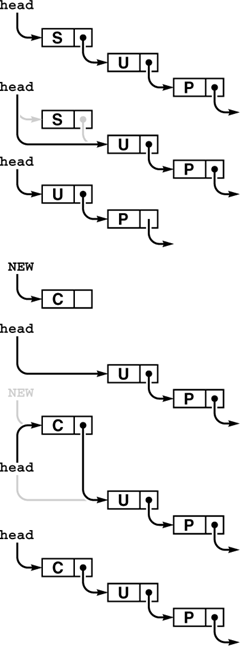

C++ Programming Robert Sedgewick - Princeton University Addison Wesley Professional Algorithms in C++, Parts 1–4: Fundamentals, Data Structure, Sorting, Searching, Third Edition C++ Programming Robert Sedgewick - Princeton University Addison Wesley Professional Algorithms in C++, Parts 1–4: Fundamentals, Data Structure, Sorting, Searching, Third Edition
4.4. Stack ADT Implementations
In this section, we consider two implementations of the stack ADT: one using arrays and one using linked lists. The implementations are both straightforward applications of the basic tools that we covered in Chapter 3. They differ only, we expect, in their performance characteristics.
Program 4.7. Array implementation of a pushdown stack|
When there are N items in the stack, this implementation keeps them in s[0],. . .,s[N-1], in order from least recently inserted to most recently inserted. The top of the stack (the position where the next item to be pushed will go) is s[N]. The client program passes the maximum number of items expected on the stack as the argument to the constructor for STACK, which allocates an array of that size, but this code does not check for errors such as pushing onto a full stack (or popping an empty one).
template <class Item>
class STACK
{
private:
Item *s; int N;
public:
STACK(int maxN)
{ s = new Item[maxN]; N = 0; }
int empty() const
{ return N == 0; }
void push(Item item)
{ s[N++] = item; }
Item pop()
{ return s[--N]; }
};
|
If we use an array to represent the stack, each of the functions declared in Program 4.4 is trivial to implement, as shown in Program 4.7. We put the items in the array precisely as diagrammed in Figure 4.1, keeping track of the index of the top of the stack. Doing the push operation amounts to storing the item in the array position indicated by the top-of-stack index, then incrementing the index; doing the pop operation amounts to decrementing the index, then returning the item that it designates. The construct operation (constructor) involves allocating an array of the indicated size, and the test if empty operation involves checking whether the index is 0. Compiled together with a client program such as Program 4.5 or Program 4.6, this implementation provides an efficient and effective pushdown stack.
We know one potential drawback to using an array representation: As is usual with data structures based on arrays, we need to know the maximum size of the array before using it, so that we can allocate memory for it. In this implementation, we make that information an argument to the constructor. This constraint is an artifact of our choice to use an array implementation; it is not an essential part of the stack ADT. We may have no easy way to estimate the maximum number of elements that our program will be putting on the stack: If we choose an arbitrarily high value, this implementation will make inefficient use of space, and that may be undesirable in an application where space is a precious resource. If we choose too small a value, our program might not work at all. By using an ADT, we make it possible to consider other alternatives, in other implementations, without changing any client program.
For example, to allow the stack to grow and shrink gracefully, we may wish to consider using a linked list, as in the implementation in Program 4.8. We keep the stack in reverse order from the array implementation, from most recently inserted element to least recently inserted element, to make the basic stack operations easier to implement, as illustrated in Figure 4.5. To pop, we remove the node from the front of the list and return its item; to push, we create a new node and add it to the front of the list. Because all linked-list operations are at the beginning of the list, we do not need to use a head node.
The stack is represented by a pointer head, which points to the first (most recently inserted) item. To pop the stack (top), we remove the item at the front of the list, by setting head from its link. To push a new item onto the stack (bottom), we link it in at the beginning by setting its link field to head, then setting head to point to it.

The code in Program 4.8 does not check for errors such as popping an empty stack, pushing onto a full stack, or running out of memory. To check for the latter two conditions, we have two options. We could treat them as separate errors, keeping track of the number of items on the list and, for each stack push, checking both that the count does not exceed the value passed as argument to the constructor and that new succeeds. Or, we might take the position that we do not need to know the maximum size of the stack ahead of time, and report a full stack only when new fails, ingoring the argument to the constructor (see Exercise 4.24).
Programs 4.7 and 4.8 are two different implementations for the same ADT. We can substitute one for the other without making any changes in client programs such as the ones that we examined in Section 4.3. They differ in only their performance characteristics. The array implementation uses the amount of space necessary to hold the maximum number of items expected throughout the computation; the list implementation uses space proportional to the number of items, but always uses extra space for one link per item and uses extra time, to allocate memory for each push and deallocate memory for each pop. If we need a huge stack that is usually nearly full, we might prefer the array implementation; if we have a stack whose size varies dramatically and other data structures that could make use of the space not being used when the stack has only a few items in it, we might prefer the linked-list implementation.
Program 4.8. Linked-list implementation of a pushdown stack|
This code implements the pushdown stack ADT using a linked list. The data representation for linked-list nodes is organized in the usual way (see Chapter 3), and includes a constructor for nodes that fills in each new node with the given item and link.
template <class Item>
class STACK
{
private:
struct node
{ Item item; node* next;
node(Item x, node* t)
{ item = x; next = t; }
};
typedef node *link;
link head;
public:
STACK(int)
{ head = 0; }
int empty() const
{ return head == 0; }
void push(Item x)
{ head = new node(x, head); }
Item pop()
{ Item v = head->item; link t = head->next;
delete head; head = t; return v; }
};
|
These same considerations about space usage hold for many ADT implementations, as we shall see throughout the book. We often are in the position of choosing between the ability to access any item quickly but having to predict the maximum number of items needed ahead of time (in an array implementation) and the flexibility of always using space proportional to the number of items in use while giving up the ability to access every item quickly (in a linked-list implementation).
Beyond basic space-usage considerations, we normally are most interested in performance differences among ADT implementations that relate to running time. In this case, there is little difference between the two implementations that we have considered.
Property 4.1. We can implement the push and pop operations for the pushdown stack ADT in constant time, using either arrays or linked lists
That the stack items are kept in different orders in the array and the linked-list implementations is of no concern to the client program. The implementations are free to use any data structure whatever, as long as they maintain the illusion of an abstract pushdown stack. In both cases, the implementations are able to create the illusion of an efficient abstract entity that can perform the requisite operations with just a few machine instructions. Throughout this book, our goal is to find data structures and efficient implementations for other important ADTs.
The linked-list implementation supports the illusion of a stack that can grow without bound. Such a stack is impossible in practical terms: at some point, new will raise an exception when the request for more memory cannot be satisfied. It is also possible to arrange for an array-based stack to grow and shrink dynamically, by doubling the size of the array when the stack becomes half full, and halving the size of the array when the stack becomes half empty. We leave the details of implementing such a strategy as an exercise in Chapter 14, where we consider the process in detail for a more advanced application.
Exercises |  4.21 Give the contents of s[0], ..., s[4] after the execution of the operations illustrated in Figure 4.1, using Program 4.7. 4.21 Give the contents of s[0], ..., s[4] after the execution of the operations illustrated in Figure 4.1, using Program 4.7.
| |  4.22 Suppose that you change the pushdown-stack interface to replace test if empty by count, which should return the number of items currently in the data structure. Provide implementations for count for the array representation (Program 4.7) and the linked-list representation (Program 4.8). 4.22 Suppose that you change the pushdown-stack interface to replace test if empty by count, which should return the number of items currently in the data structure. Provide implementations for count for the array representation (Program 4.7) and the linked-list representation (Program 4.8).
| | 4.23 Modify the array-based pushdown-stack implementation in the text (Program 4.7) to call a member function error() if the client attempts to pop when the stack is empty or to push when the stack is full.
| | 4.24 Modify the linked-list–based pushdown-stack implementation in the text (Program 4.8) to call a member function error() if the client attempts to pop when the stack is empty or if there is no memory available from new for a push.
| | 4.25 Modify the linked-list–based pushdown-stack implementation in the text (Program 4.8) to use an array of indices to implement the list (see Figure 3.4).
| | 4.26 Write a linked-list–based pushdown-stack implementation that keeps items on the list in order from least recently inserted to most recently inserted. You will need to use a doubly linked list.
| |  4.27 Develop an ADT that provides clients with two different pushdown stacks. Use an array implementation. Keep one stack at the beginning of the array and the other at the end. (If the client program is such that one stack grows while the other one shrinks, this implementation uses less space than other alternatives.) 4.27 Develop an ADT that provides clients with two different pushdown stacks. Use an array implementation. Keep one stack at the beginning of the array and the other at the end. (If the client program is such that one stack grows while the other one shrinks, this implementation uses less space than other alternatives.)
| | 4.28 Implement an infix-expression–evaluation function for integers that includes Programs 4.5 and 4.6, using your ADT from Exercise 4.27. Note: You have to cope with the fact that both stacks have to contain items of the same type. |
|